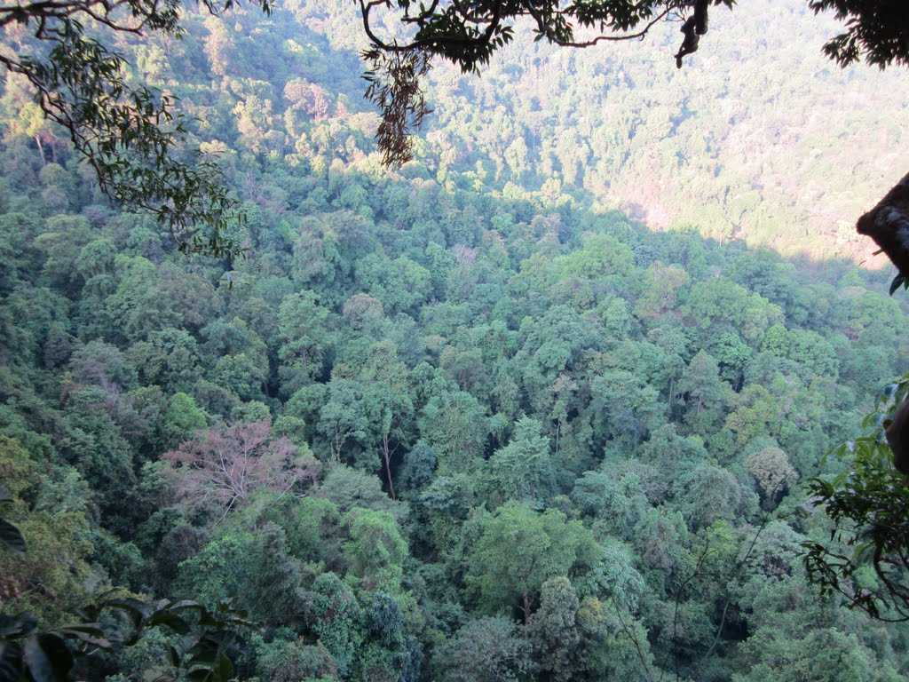
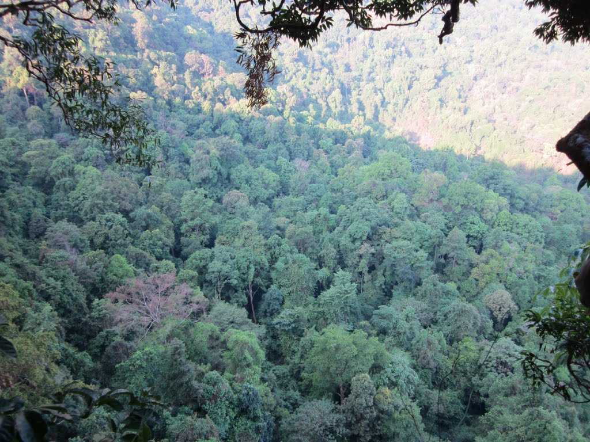
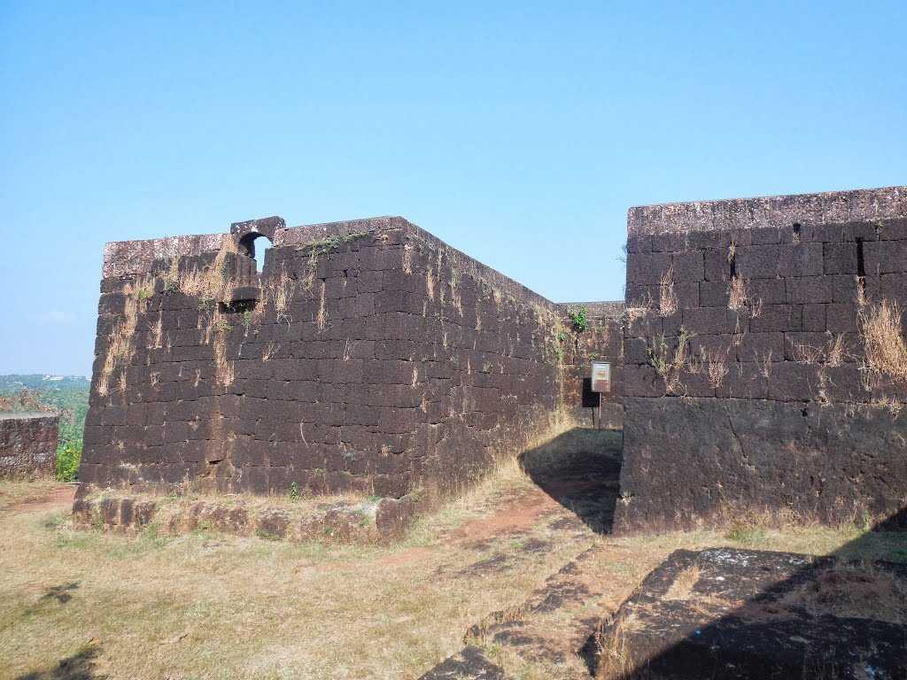

MAIN ATTRACTIONS
Ranipuram
The gentle hills of Ranipuram in Kerala are famous for its trekking trail. Situated at the height of about 750 meters above sea level, this destination has thick forest vegetation and lush green grasslands. The whole place is proposed inside the Ranipuram Wildlife Sanctuary which merges with Talakaveri Wildlife Sanctuary of Karnataka.


 

Kottancheri hills
A site with beautiful trekking trails offering its visitors an adventurous activity, Kottancheri Hills is basically considered to be the extension of Ranipur Wildlife Sanctuary.
Chandragiri fort
Flanked by nature on all sides and immersed in a glorious past, the Chandragiri Fort is one of the several forts established by Sivappa Naik of Bedanore during 17th century.

Mallikarjuna temple
Located in the heart of Kasargod town, Mallikarjuna Temple is considered to be one of the oldest temples in the town. Renowned for its fascinating musical theater and festival Yakshagana, this temple is dedicated to Lord Shiva in form of Mallikarjuna.
Kareem's forest
A paradise for nature lovers, scientists, biologists, environmentalist and students of Ayurveda, Kareem's Forest Park is believed to be the country's leading private sanctuary.